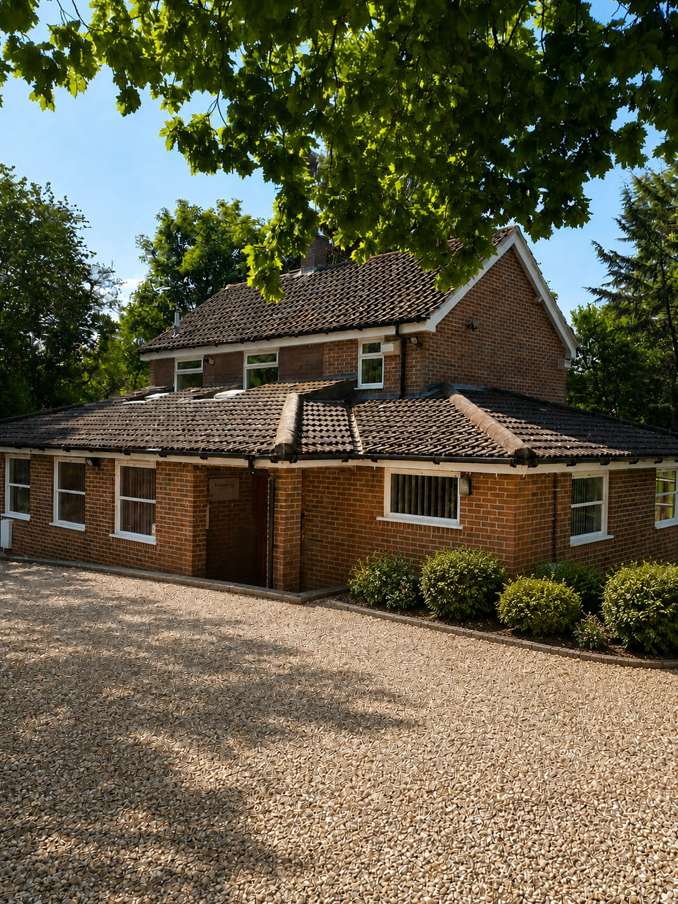
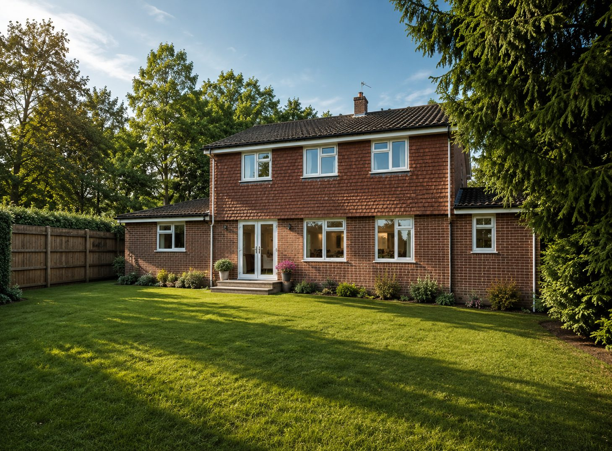

Commercial freehold · Westcott, Surrey
Riverbank, Westcott
A commercial freehold investment with long-term alternative-use potential, subject to planning
- Occupied property
- Occupation arrangements disputed
- Use restricted by planning condition
- Alternative use subject to consents
An opportunity to acquire premises currently used by Dorking Medical Practice, offered subject to existing occupation. The occupation arrangements are disputed.
Under the 1989 planning permission, the premises may be used only for medical or health services. A 2021 application to change the use to a single dwelling was withdrawn. The practice has explored replacement accommodation and supported a proposal with Rushmon Homes. Any future alternative use would depend on resolution of occupation, the planning position and the necessary consents.
- Guide price
- To confirm — auctioneer
- Auction date
- To confirm — auctioneer
- Buyer's fees
- To confirm — auctioneer

Property
Property overview
A detached brick building on a mature, tree-lined plot beside the Pipp Brook, on the north-west side of Westcott, currently in use as medical premises.
- Address
- To confirm — full postal address from title
- Title
- Freehold, HM Land Registry title SY607273. To confirm — seller's identity and the interest being sold
- Building
- Two-storey detached former house, converted to a doctors' surgery and extended with single-storey wings in 1989. Brick under pitched tiled roofs.
- Accommodation
- Ground floor: waiting area, reception, dispensary, two consulting rooms, nurse room and store, two WCs. First floor: staff room and kitchen, a third consulting room, bathroom/WC.
- Floor area
- Approx. 134 m² net internal area (ground 105.8 m², first 28.6 m²), measured in February 2022 during a third-party valuation inspection. To confirm — current measured survey
- Plot extent
- To confirm — from title plan
- Current use
- Medical premises, occupied by Dorking Medical Practice
- Parking
- The parking area in front of the building is understood to lie outside the title boundary. To confirm — access and parking rights
- Services
- Mains services understood to be connected (February 2022); not tested.
- Condition
- To confirm
- EPC
- C (51), issued 2 July 2018. To confirm — check the EPC register
- Flood risk
- The building is in Flood Zone 1. Part of the rear garden, towards the Pipp Brook, is in Flood Zones 2 and 3 (Environment Agency map, as reported in February 2022).
- Designations
- Surrey Hills Area of Outstanding Natural Beauty (National Landscape) and Area of Great Landscape Value. The 1989 planning report described the site as Metropolitan Green Belt. To confirm — current Green Belt status
- Covenants
- The register refers to restrictive covenants in a 1980 deed and a 1990 transfer. Details will be in the legal pack.

Floor plans
Ground floor
First floor
Investment
Investment opportunity
Riverbank offers buyers an opportunity to assess an existing commercial property alongside its longer-term potential. Dorking Medical Practice has supported proposals for alternative premises, although relocation has not been secured.
If suitable replacement provision is delivered and the occupation position is resolved, a purchaser could investigate an alternative use. Any such use would need planning permission: the current permission restricts the premises to medical or health services, and a 2021 application for a single dwelling was withdrawn. Buyers should assess the opportunity against the planning history below and the information in the legal pack.
Payments and income
To confirm — verified payment schedule, receipts, any arrears or disputed sums, and the identity of the legal payer, from the selling solicitor.
No guarantee of income is represented. Any reimbursement arrangements between the NHS and the practice are not a guarantee to the owner of the property.
Occupation
Occupation position
The property is currently occupied by Dorking Medical Practice. The nature and terms of that occupation are disputed. The legal pack will explain the parties' positions and the basis on which the property is offered for sale.
Vacant possession is not promised by these particulars. Buyers should refer to the contract, special conditions and their own legal advice.
Summary of the parties' positions
To confirm — solicitor-approved, neutral summary of both parties' positions, including any material notices or proceedings.
The practice continues to operate from Riverbank. In its statement of 18 September 2026, it set out its view that Riverbank can continue to serve the village with investment, and it did not commit to leave by a specified date.
Planning
Future potential and planning
Planning history
| Reference | Proposal | Decision |
|---|---|---|
| MO/89/1022 | Change of use from residential (formerly "Peacehaven") to doctors' surgery, with single-storey extensions at front and side totalling 57 m². | Granted, 29 September 1989, subject to conditions including:
|
| MO/91/0243 | Extension to the surgery car park to provide up to 15 additional spaces. | Approved, as reported in 2022. To confirm — decision notice |
| MO/2021/2158 | Change of use of the doctors' surgery (Use Class E) to one dwelling (Use Class C3). Validated 19 November 2021. | Withdrawn |
Planning records can be viewed on the Mole Valley planning portal. The 1989 report noted the site lies beyond the settlement boundary, in the Green Belt, and treated the surgery as an exception to policy.
Replacement premises
In its statement dated 18 September 2026, Dorking Medical Practice confirmed that it had supported a pre-application enquiry with Rushmon Homes for land north of Riverbank. At that date, it reported no planning application, planning permission, NHS capital or revenue approval, or agreed timescale.
The status of that proposal should be checked against the latest published documents before bidding.
Alternative-use potential
An alternative use, including residential, may be worth investigating if occupation is lawfully resolved and replacement medical provision is delivered. This is potential for a purchaser to assess. It would require planning permission, including relief from condition 5 of MO/89/1022, and would be assessed against Green Belt, Surrey Hills and neighbourhood plan policy.
Relocation would not itself grant permission for another use. A 2021 application for a single dwelling was withdrawn. No residential consent, and no route to one, is represented in these particulars.
Planning appraisal
To confirm — site-specific planning appraisal covering applicable policy, safeguarding, planning history and any route to alternative use.
Documents
Documents
Documents are dated. Material updates will be listed here and on the auction listing.
| Document | Category | Version / date | Status |
|---|---|---|---|
| Title register and title plan (SY607273, official copies) | Legal | — | Available once published |
| Legal pack | Legal | — | Available once published |
| Special conditions and addenda | Legal | — | Available once published |
| Occupation summary (selling solicitor) | Occupation | — | Available once published |
| Measured survey and floor plans | Property | — | Available once published |
| Energy Performance Certificate | Property | — | Available once published |
| Planning appraisal | Planning | — | Available once published |
| Planning permission MO/89/1022 and conditions | Planning | 29 Sep 1989 | View on council portal |
| Withdrawn application MO/2021/2158 | Planning | Nov 2021 | View on council portal |
| Planning status and history summary | Planning | — | Available once published |
| Dorking Medical Practice hearing statement | Planning | 18 Sep 2026 | Available once published |
| Replacement premises documents | Planning | — | Available once published |
Viewings: To confirm — viewing arrangements with the selling agent
Auction
Sale and auction
Sale basis
The proposed sale concerns the property interest described in the legal pack, subject to the disclosed occupation and title position. It does not include the medical practice business, its patient list, goodwill or NHS contracts.
The commercial freehold is being offered as a property investment, for sale on the open market, with guide and reserve informed by current professional advice.
Guide price and reserve
The guide price, once published, will be explained by the auctioneer. A guide price is not a valuation, a reserve or the price the property will sell for. Buyers should review all charges, auction conditions and subsequent addenda before bidding.
- Auctioneer
- To confirm
- Sale format
- To confirm — including the point at which a bid becomes binding
- Date and time
- To confirm
- Guide price
- To confirm
- Buyer's fees and charges
- To confirm
- VAT
- To confirm
- Deposit / reservation
- To confirm
- Completion
- To confirm
Bidder registration, identity checks, bidding and deposits are handled by the appointed auctioneer, not this website.
Enquiries
Register interest
Register to receive the particulars, legal pack notifications and auction details once published.
Selling agent
To confirm — firm, contact name, telephone and email